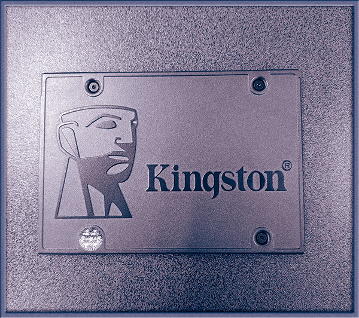
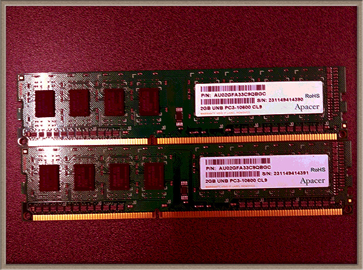
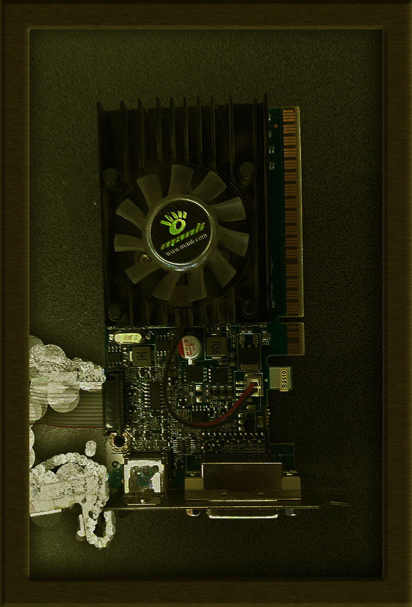
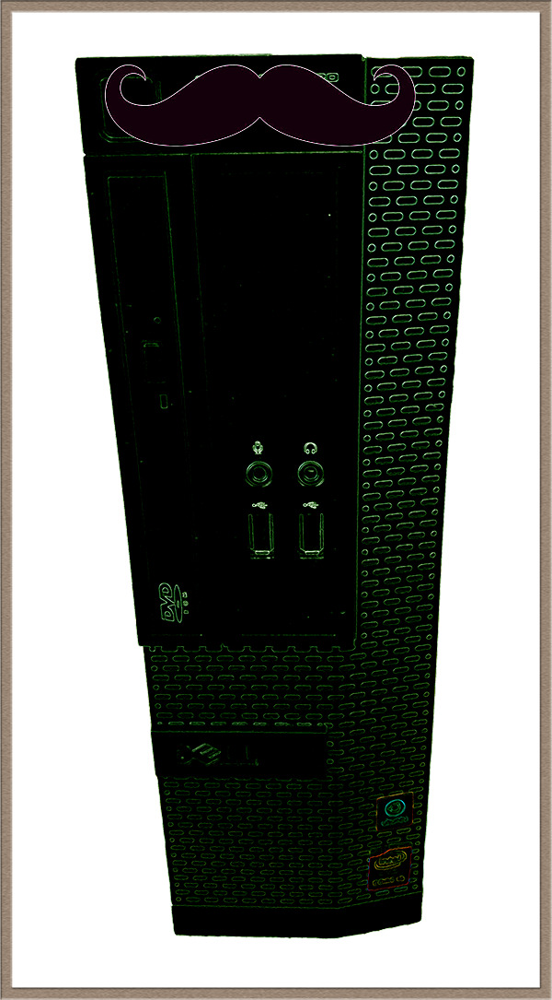

-
Gather Components: Collect all necessary parts: CPU, motherboard, GPU (if separate), RAM, storage (SSD/HDD), power supply, case, and any additional peripherals.

-
Prepare Workspace: Clear a clean, spacious area to work. Use an anti-static mat or wristband to prevent damaging components with static electricity.
-
Install CPU: Open the CPU socket on the motherboard, gently place the CPU in, and secure it according to the motherboard's instructions. Be mindful of the CPU orientation.

-
Install RAM: Open the RAM slots on the motherboard and insert the RAM sticks. Apply equal pressure on both sides until they click into place.

-
Mount Motherboard: Install the motherboard into the case, aligning the ports with the case's cutouts. Secure it using screws provided with the case.

-
Install Storage and GPU: Insert the SSD/HDD into their respective drive bays or slots on the case. If using a dedicated GPU, install it into the appropriate PCIe slot on the motherboard.

-
Connect Cables: Connect the power supply cables to the motherboard, CPU, GPU, and storage devices. Refer to the motherboard manual for specific connections.
-
Case Fans and Front Panel: Install case fans and connect them to the motherboard or power supply. Connect the case's front panel connectors (power button, USB, etc.) to the motherboard.

Cable Management: Organize cables inside the case to improve airflow and aesthetics. Use zip ties or Velcro straps to secure cables and keep them out of the way.
-
Power On: Double-check all connections. Once satisfied, connect the power cable and turn on the power supply. Press the power button to start the PC.
-
BIOS Setup: Enter the BIOS/UEFI by pressing the designated key during boot (often Del, F2, or F12) and configure settings like boot order, date/time, and RAM frequency.
-
Install OS: Install your operating system (Windows, Linux, etc.) using a USB drive or DVD. Follow on-screen instructions for installation.
-
Driver Installation: Install drivers for your motherboard, GPU, and any other peripherals. You can usually find these on the manufacturer's website.
-
Updates and Testing: Update your OS and drivers to the latest versions. Test your PC's stability using benchmarking software or running demanding applications.
-
Enjoy: Once everything is set up and running smoothly, enjoy your newly built PC!